| 日付 | 2026年2月14日（土） |
|---|---|
| 山域 | 安蘇山塊 |
| メンバー | 単独 |
| 山行形態 | 日帰り |
| アクセス | 車 |
| ルート (Map) | こどものもり公園駐車場 (8:21) - (8:58) 榛名山 - (9:31) 本山 - (10:12) 飯盛山 - (10:50) 高舘山 (11:00) - (11:36) 兜山 - (11:53) 鬼山 - (13:10) こどものもり公園駐車場 |
宇都宮北部に篠井富屋連峰と呼ばれる山々がある。
別名、宇都宮アルプスとも呼ばれている。
標高は500m程度と低い山々で、ぐるっと一周歩いてみることにする。
こどものもり公園駐車場に車を停める。標高230m。
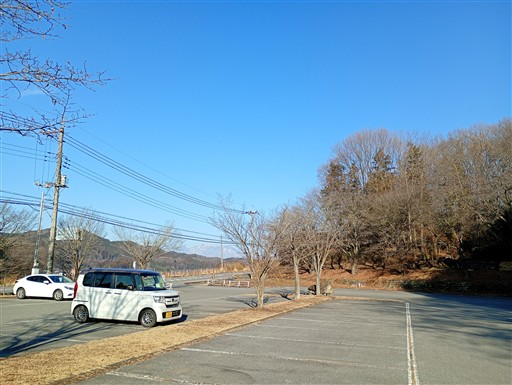
「冒険がはじまるよ」
学校などが利用する施設で、個人利用の施設ではなさそうだ。
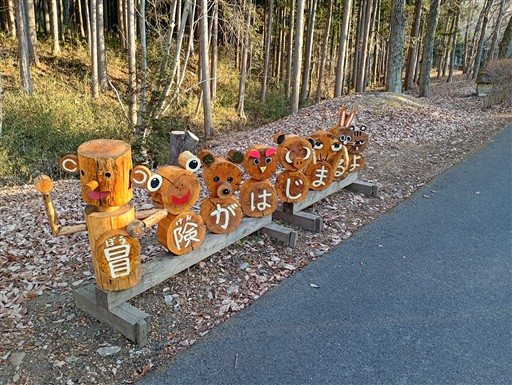
高台から施設を見下ろす。
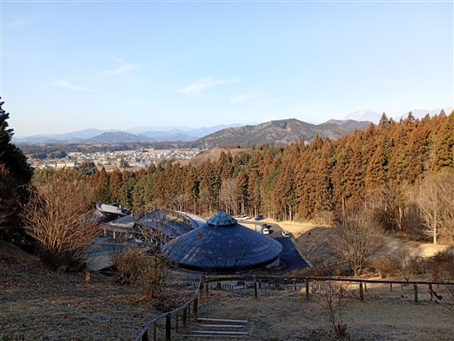
登山道が始まる。
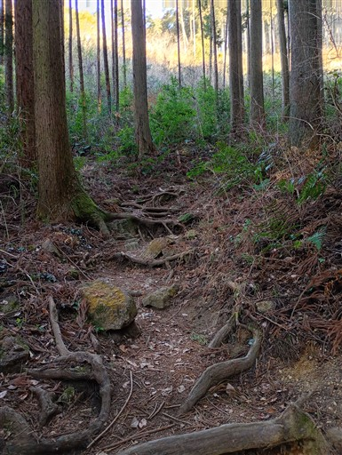
すぐに展望台に到着。良い展望が広がりそうだが、閉鎖されて入れないようになっている。
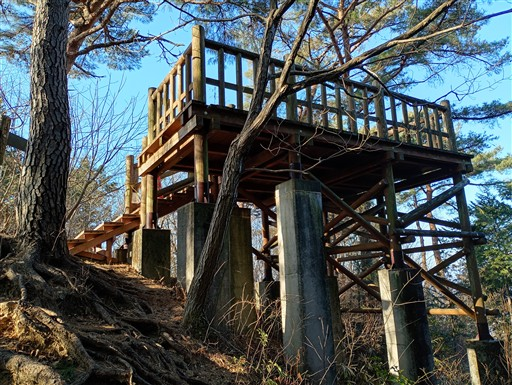
案外険しい登山道。急斜面が続く。
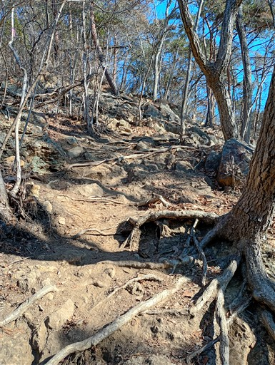
榛名山山頂に到着。標高524m。
本日最初のピークだ。
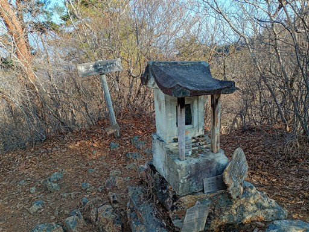
続いて男山に向かう。岩がちな尾根を登る。
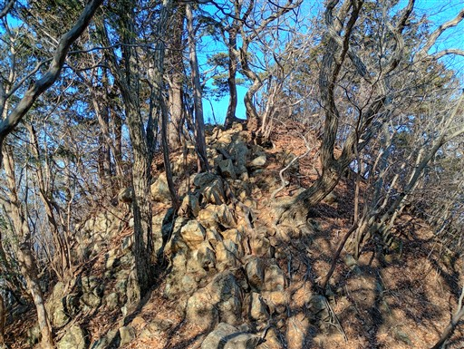
男山に到着。標高527m。
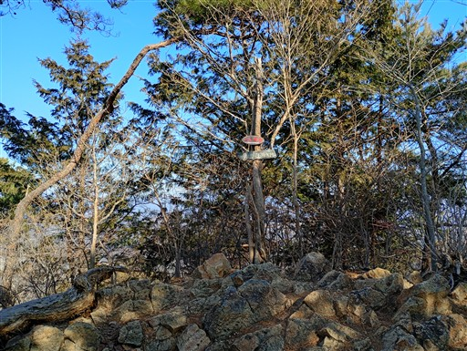
この山頂からは少しだけ展望が広がる。
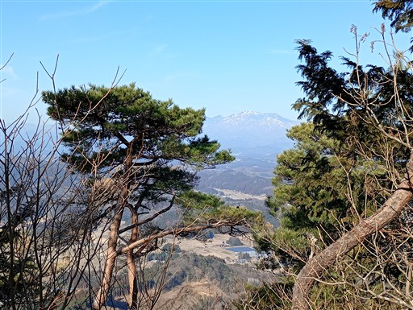
登りが急なら下りも急。
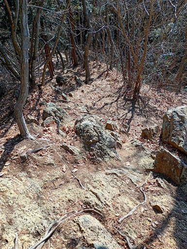
笹原広がる登山道。
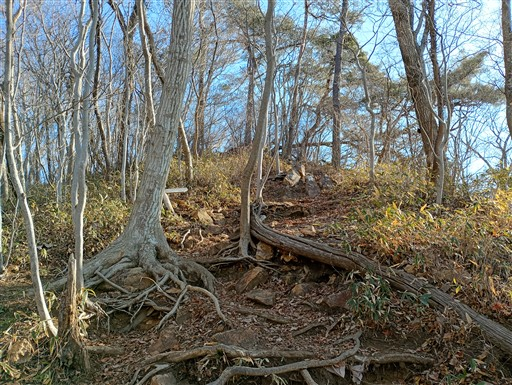
本山に到着。標高562m。
篠井富屋連峰の最高峰だ。
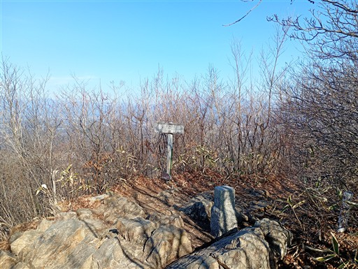
この山頂からは素晴らしい展望が広がる。
目の前に聳えているのは日光連山。左が男体山、右が女峰山だ。
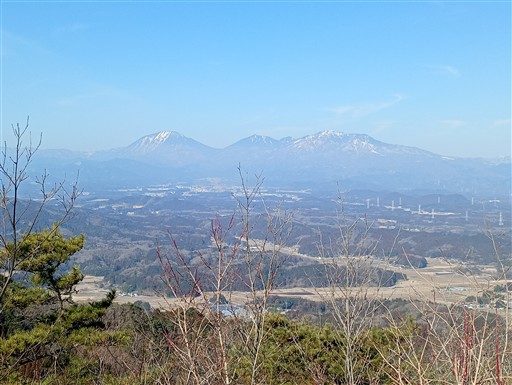
こちらは高原山。こちらも意外に近い位置にある。
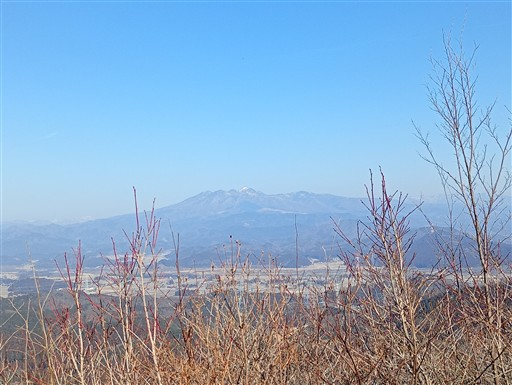
またまた急な下り。
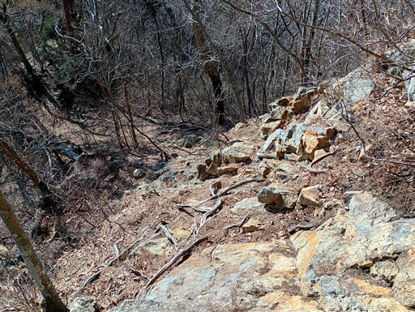
ここからは尾根道を南下する。
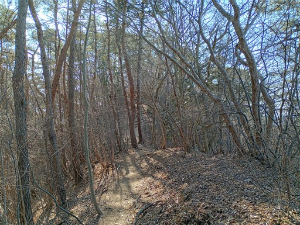
突然、森林伐採地帯に出てきて登山道が途切れてしまう。
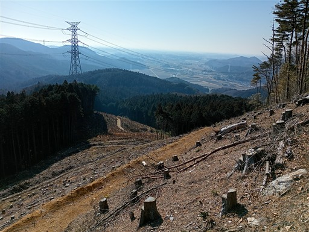
進むべき方向に適当に斜面を下ると、標識が出てくる。
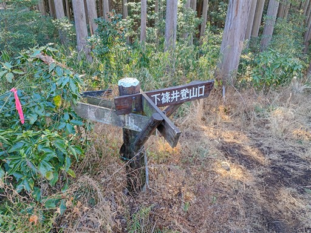
ここからは飯盛山への登り。
岩と木の根がミックスした急斜面の登りだ。
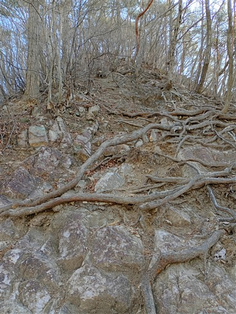
飯盛山到着。標高501m。

そして下りも急。この急斜面でスリップしてこけてしまった。
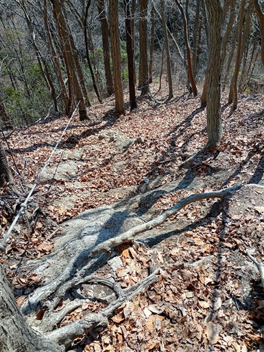
林道に下り立つ。
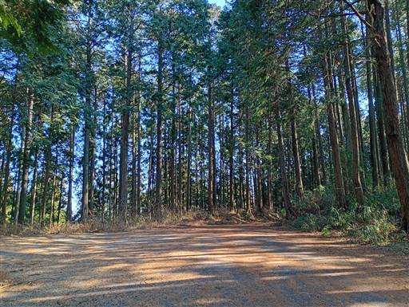
しばらく林道を歩いたら再び登山道へ。
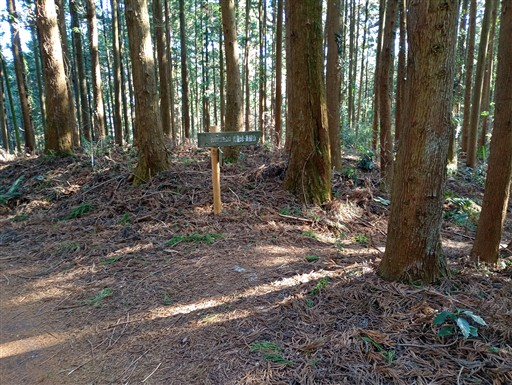
青嵐峠。ここまで歩いてきた篠井連峰と、これから歩く富屋連峰の境目だ。
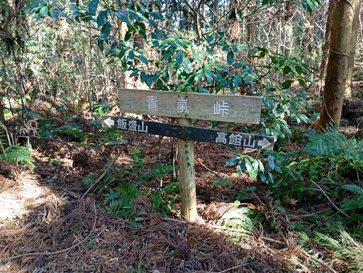
しばらく平坦な道が続く。
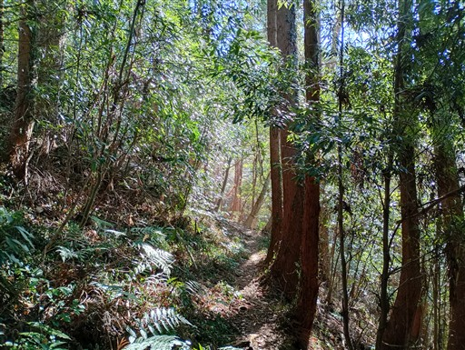
一登りで高舘山に到着。標高477m。
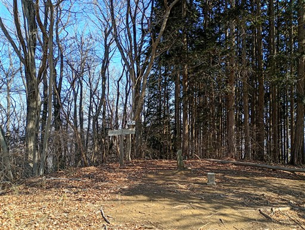
石仏が祀られている。この山域は石祠や石仏をよく見かける。
ここでおやつ休憩をとる。
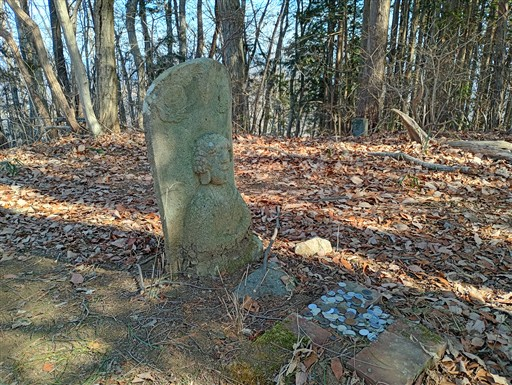
黒戸山を通過。
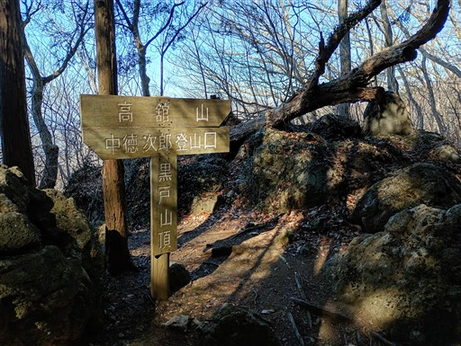
周囲は植林地帯が多くなる。今日は暖かいので花粉が心配だ。
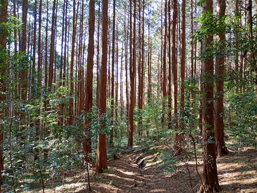
黒戸山登山口を過ぎて、ここからは林道歩き。
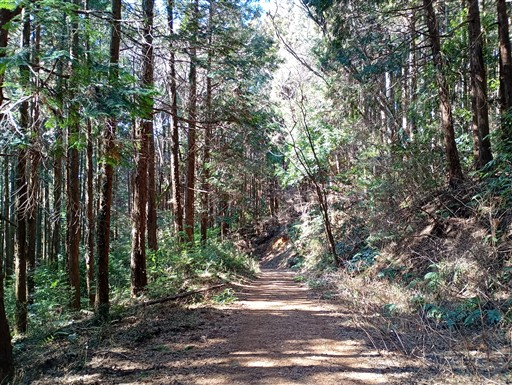
ここから兜山を往復する。
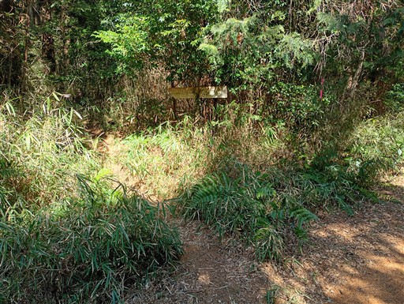
山頂直下に大岩がある。
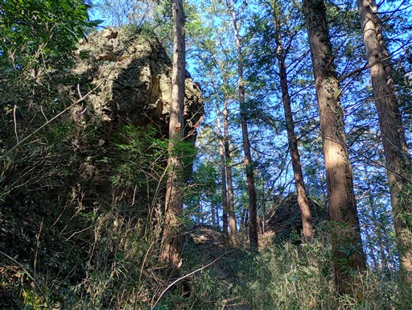
兜山山頂に到着。標高372m。
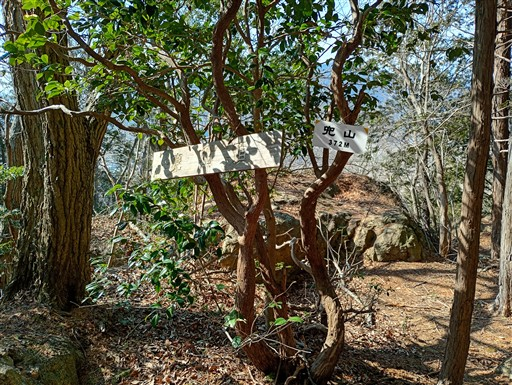
大きな岩があるが、展望は広がらない。
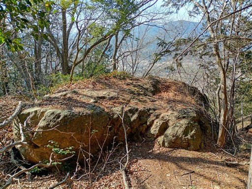
元来た道を引き返したら、今度は鬼山を往復する。
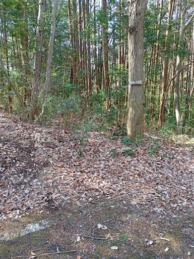
この山も山頂直下は岩がある。
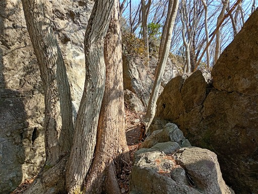
鬼山に到着。標高372m。ここも展望は広がらない。
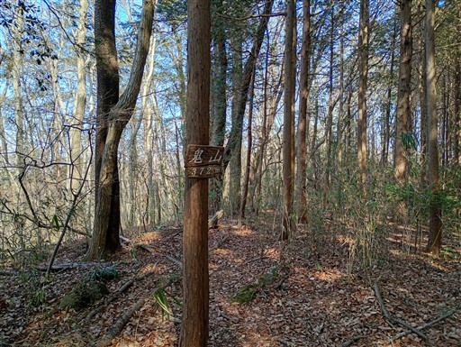
あとは林道を歩く。あと2ヶ月もすれば新緑が美しくなりそうな場所だ。
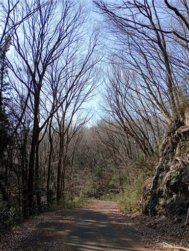
下山地点に到着。長い連峰を歩いてきたので、長く車道を歩いて戻る必要がある。
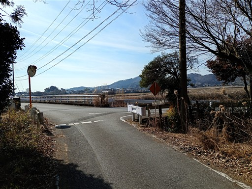
のどかな風景。
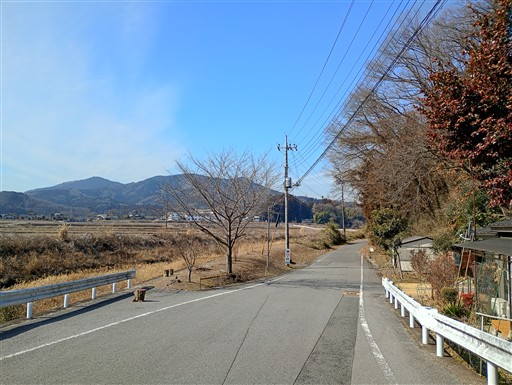
歩いてきた篠井連峰。
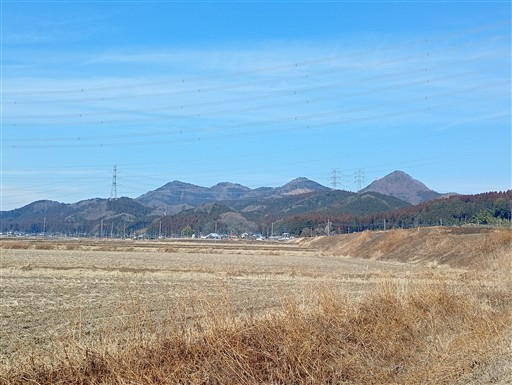
牛舎。牛さんがこちらを見ている。
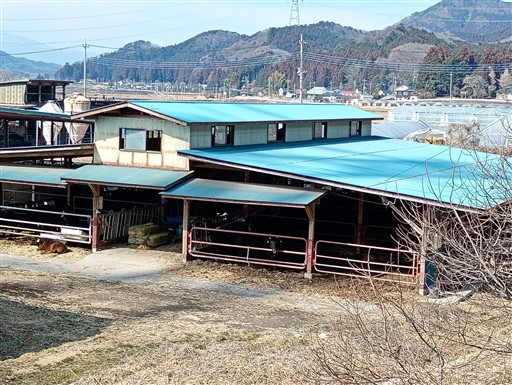
オオイヌノフグリとホトケノザ。もうすぐ春だ。
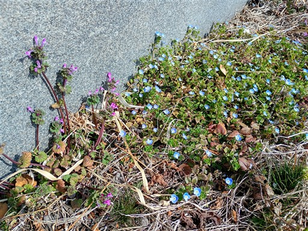
神社の鳥居。この道を歩くだけでも3つは神社を見かけた。
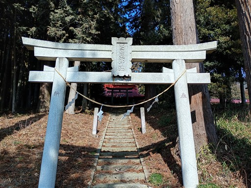
駐車場に戻ってくる。最後の車道歩きは長くて疲れた。
篠井富屋連峰は意外にアップダウンが多い険しい山だった。
山頂や登山道からはほとんど展望が広がらないのが少し残念だった。
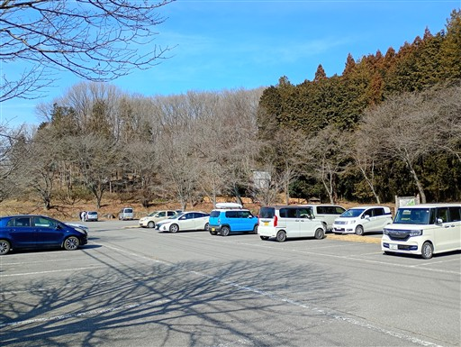